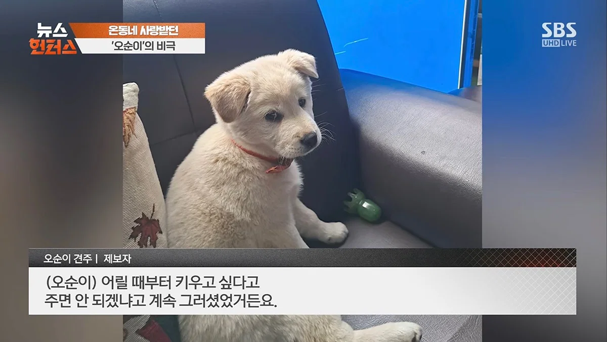
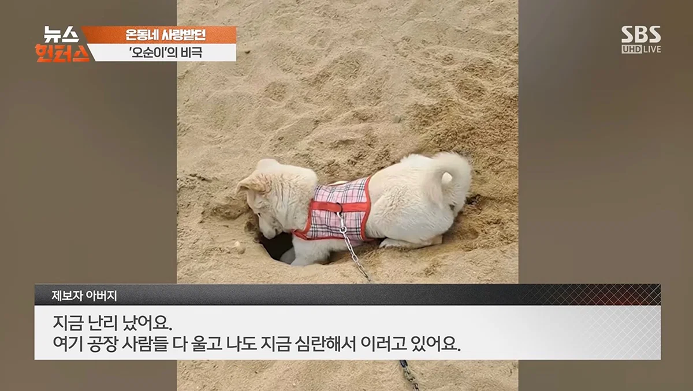

이거 5년전 쯤에도 비슷한 사건 있었는데 진돗개 2마리 분양받아서 가평보내놨다 해놓곤 분양 받은지 2시간만에 개소주 만든거...
저새끼 자식이든 부모든 가족누구 똑같이 해도 무죄
어릴때 할머니집에서 키우던 복구 복날 개패서 잡은뒤에 개소주로 먹었는데
패던 모습을 봤는데 너무 충격적이라 기억이 단편적으로만 남
내가 어릴때 허약해서 잔병치레 많았는데,
개소주 먹고 나서는 年에 감기 한번 걸리면 많이 아픈 정도임 요즘엔.
미친놈 아닌가
정신 이상자 같은데
아 씨발
미친새낀가??그래서 고소햇나?
개소주 만들어주는 건강원도 처벌 해야해.
식품위생법 명백하게 위반인걸 대놓고 건강원들 존나 하는데 뭐 건강원은 치외법권마냥 다함
개 구하려면 어디서든 구할텐데 남의개를 왜